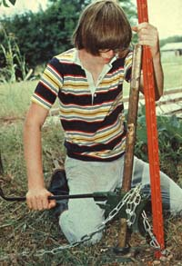

You don't have to buy or rent a lot of expensive equipment to handle your tough homestead lifting jobs. Chances are, you already own the only tool you'll ever need. It's a simple, non-polluting, human-scale lifting device cleverly disguised as ... your automobile bumper jack.
You can use one of these handy gadgets to perform a wide variety of chores: stretching wire, uprooting posts, and lifting and supporting all sorts of heavy objects. Some readily available models will safely lift loads as large as 4,000 pounds. Jacks are easy to handle, too. They're light-weight (10 to 15 pounds), and require no supplemental power source or provision for overhead mounting.
Best of all, a jack is a first-rate money-saver. If you don't already own one, you can buy a used unit for as little as $4.50. Besides that, you'll save additional money-over and over again-every time you substitute the jack for some other, more conventional, piece of equipment.
Summing up: It's versatile, powerful, easy to use, and cost-effective. An automobile bumper jack ... your homestead jack-of-alltrades.
A jack and chain can make fencepost removal an inexpensive one-man operation ... two of the minihoists will support a water heater while its rotted wooden base is being replaced ... a jack and a lever can be used to move almost any object that's too heavy to move by hand ... hoist a massive timber onto some solid concrete blocks with a jack and a chain and you've just built you self a rustic bench ... or let the jack alone support a sagging gate while you reinforce its post ... then stretch woven wire fencing with a jack, some chain, and an "S" hook ... and - finally - just pick up your compact jack-of-all-trades and carry it back to the toolshed. A jack can go anywhere you can go.
|
 |
|
|